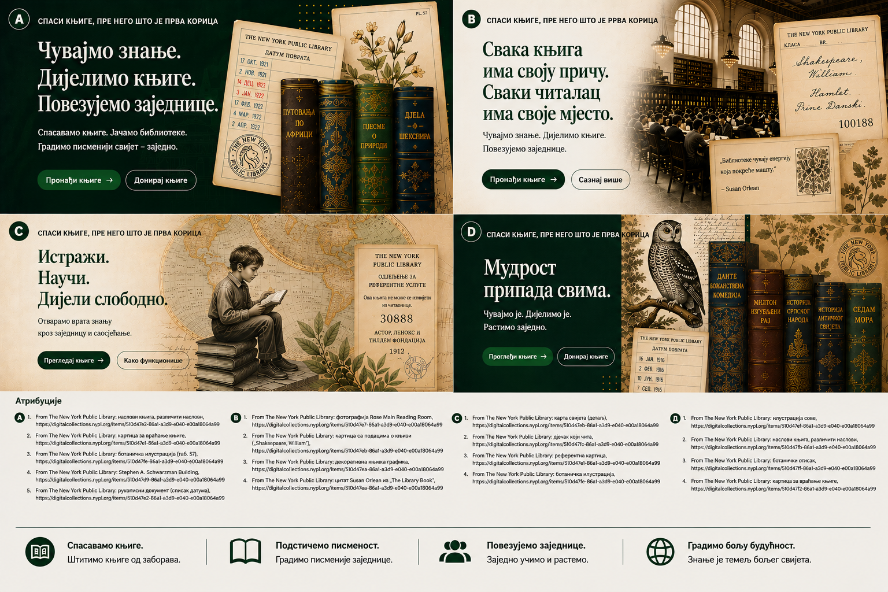

Институционални примери на овој страници служе само као концептуални приказ тока рада и не подразумевају постојећа партнерства или имплементације.
Водич за институције
Прегледајте понуде књига са довољно структуре за стварне одлуке.
Let Books је осмишљен за библиотекама пријатељске процесе, али и за школе, универзитете, архиве и удружења којима треба практичан преглед и координација преузимања.

Када је овај водич за вас
- Прегледате књиге које донатори нуде.
- Треба вам структуриран избор уместо неформалне е-поште.
- Одлуке желите да вежете за стабилне идентификаторе.
- Важни су вам извор података, стање и изводљивост преузимања.
Ко све може бити институција
- Јавне и академске библиотеке
- Школе и универзитети
- Архиви и специјализоване збирке
- Удружења и друге партнерске организације
Основни процес прегледа
MVP процес је намерно једноставан јер ће многе институције пре прихватити табелу него нови портал.
Примите извоз
Отворите листу са стабилним ID-јевима и читљивим метаподацима.
Означите одлуке
Бирате жели, можда или не жели и по потреби додајете коментар.
Вратите датотеку
Користите познат ток рада без обавезног новог налога.
Увезите одлуке
Донатор враћа ваше одлуке без нејасног повезивања по наслову.
Направите листу преузимања
Тражени примерци груписани су по стварним локацијама.
Договорите примопредају
Преузимање и достава остају ван платформе док будуће функције то изричито не прошире.
Зашто је важан извор података
Институције треба да знају долази ли податак од човека, из OCR-а, спољног каталога или увоза. Поверење и статус прегледа морају бити видљиви.
Физичка логистика и даље одлучује
Тражени примерак користан је тек када га неко може пронаћи. Листа преузимања по соби, полици и кутији то чини изводљивим.
Пример: Градска библиотека, универзитетско одељење и локални архив прегледају један извоз приватног донатора и сваки бира различите примерке према стању и садржајној прикладности.